-th root as a continuous function is this theorem, not a construction.
-th root as a continuous function is this theorem, not a construction.
The image of an interval under a continuous function is an interval,
and the image of a closed bounded interval ![\([a,b]\)](m/0a90b3bc64f7c9d00490784b86efd520680b7522.svg) is a closed
bounded interval
is a closed
bounded interval ![\([m, M]\)](m/f9221297f58008a6a6e0038213efb630f7787fa1.svg) .
.
Let  be an interval and
be an interval and  continuous on it. If
continuous on it. If
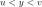
with , say and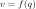
, then the intermediate value theorem applied on the interval with endpoints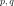
– contained in – produces  with
with 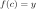
, so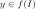
. A set containing every point between any two of its points is an interval. For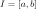
, the extreme value theorem gives with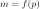
the minimum and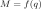
the maximum, so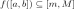
, and the first part gives the reverse inclusion.
A continuous injective function on an interval is strictly
monotone.
Suppose is neither strictly increasing nor strictly decreasing.
Then there are
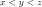
in for which  is not strictly
between
is not strictly
between  and
and 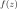
; since is injective the three values
are distinct, so is either larger than both or smaller than
both. Say 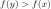
and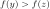
, and pick with
with
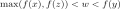
. The intermediate value theorem gives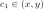
and with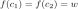
, and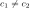
– contradicting injectivity. The other case is the same argument applied to .
.
Let be continuous and injective on an interval , and let
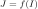
. Then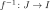
exists, is strictly monotone in the same sense as, and is continuous.
By the proposition is strictly monotone, so it is a bijection
onto  , which is an interval by the corollary; the inverse is
strictly monotone in the same sense, since preserves the order.
Let
, which is an interval by the corollary; the inverse is
strictly monotone in the same sense, since preserves the order.
Let  and suppose
and suppose  were discontinuous at some
were discontinuous at some
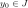
. Being monotone, has both one-sided limits there,
and by the jump description they cannot both equal 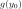
: some one-sided limit differs, say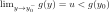
. Then omits every value strictly between  and
, so
and
, so 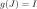
misses an interval of points lying between two of its own – impossible, since is an interval.
Continuity of the inverse is exactly what fails without the interval hypothesis. Restrict a continuous bijection to a domain that is a union of two pieces –
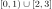
mapped onto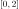
in the obvious order-preserving way – and the inverse jumps at the seam. The theorem is therefore a statement about the domain as much as about the function.